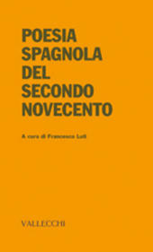

Francesco Luti: Notizie
Poesia spagnola del secondo Novecento
L'antologia curata da Francesco Luti si pone come la giusta continuazione del
discorso aperto da Oreste Macrì negli anni Sessanta con Poesia spagnola del
Novecento e costituisce quindi una rassegna organica della poesia in lingua spagnola
dai primissimi anni Cinquanta ai nostri giorni, offrendo un quadro completo dell'attività
poetica svolta in questo delicato e fondamentale periodo storico della nazione iberica.
La maggior parte degli autori che la compongono hanno partecipato attivamente alla
transizione dalla dittatura alla democrazia e alcune di queste voci – muovendo
da una visione della poesia come approfondita e diretta conoscenza della realtà
– hanno puntato nel corso degli anni alla ricerca di un linguaggio nuovo, che
rompesse con il dogmatismo della «poesia sociale» fino ad allora dominante
sulla scena dell'epoca franchista.
Il volume curato da Francesco Luti abbraccia
più generazioni di poeti, dagli ormai "classici" della cosiddetta
«generazione del 1950», passando dai «novísimos» prima
ai «poeti dell'esperienza» poi, per giungere infine a quelli che si
sono messi in luce nell'ultimo ventennio, come Luis Antonio de Villena, Benítez
Reyes, García Montero e Carlos Marzal.
Come scrive Giorgio Luti nella
sua nota introduttiva, la casa editrice Vallecchi, «che per buona parte del
Novecento ebbe il merito di far conoscere e approfondire la dimensione italiana del
dibattito culturale, oltre ad aver sempre avuto un occhio attento alle novità
straniere che apparivano al di là dei nostri confini», prosegue con questo
saggio la sua grande tradizione, «inquadrandola, in questo caso, in uno spazio
antologico che certifica un evidente clima innovativo, pur in un percorso intricato
che complessivamente impone la consistente novità di tutta un'esperienza
che la seconda metà del secolo scorso ha portato avanti, nonostante ostacoli
e contraddizioni».
Millepiedi. Dietro cose dimenticate (Edizioni Polistampa, 2006)
La storia copre circa un ventennio (1979-2001) e lambisce Firenze, il Brasile, le Marche, la Spagna. Il protagonista é Giovanni Alis, appassionato di teatro, giovane desideroso di esperienze, costretto peró a scontrarsi col cinismo della societá.Egli prova a vincere la scommessa con la vita e con gli uomini: non perdere la propria autenticitá. Lo accompagneranno nel suo viaggio gli amici, i fratelli, il nonno e la figura di Alice. Millepiedi si presenta come romanzo di formazione, "archivio di nostalgie", cronaca d'un amore. Ma é anche un saggio di stile, un catalogo di microeventi dove le emozioni sono filtrate come in poesia. L'occhio del narratore é un mirino capace di cogliere inconsueti dettagli. Millepiedi ci riavvicina alla letteratura vera, espressa dal laboratorio di uno scrittore che ha ancora molto da dire.
"Un garbatissimo ritratto di 'passaggio di stagione': quello dall'etá giovanile all'etá matura, scritto con un sottile humour che fa da perfetto contrappeso alla malinconia di cui é venato" (Antonio Tabucchi).